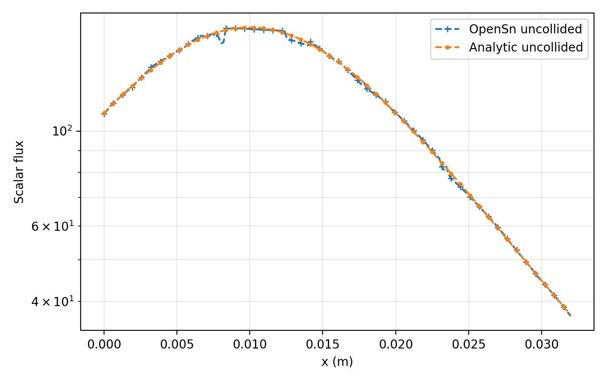

4.4.1. Generate and Validate an Uncollided Flux
This tutorial computes the uncollided angular-flux moments from an isotropic point source in a homogeneous three-dimensional cube containing 5,880 tetrahedral cells. The result is written to uncollided.h5 for reuse by the collided-flux tutorial.
The scalar flux is also compared with the analytic uncollided solution along a line offset from the source. Avoiding the point-source singularity makes this a meaningful comparison on the coarse mesh.
4.4.1.1. Prerequisites
This example runs in serial and requires the OpenSn Python module.
[ ]:
import csv
import math
import sys
from pathlib import Path
from mpi4py import MPI
rank = MPI.COMM_WORLD.rank
size = MPI.COMM_WORLD.size
if size != 1:
raise RuntimeError("The uncollided-flux file must be generated in serial.")
4.4.1.2. Import OpenSn
Locate the repository root so the notebook works both interactively and through the documentation regression-test driver.
[ ]:
repo_root = Path.cwd().resolve()
while repo_root != repo_root.parent and not (repo_root / "test" / "assets").is_dir():
repo_root = repo_root.parent
if not (repo_root / "test" / "assets").is_dir():
raise RuntimeError("Could not locate the OpenSn repository root.")
tutorial_dir = repo_root / "doc/source/tutorials/workflows/data_reuse/uncollided"
sys.path.append(str(repo_root / "build"))
from pyopensn.fieldfunc import FieldFunctionInterpolationLine, FieldFunctionInterpolationPoint
from pyopensn.logvol import RPPLogicalVolume
from pyopensn.math import Vector3
from pyopensn.mesh import FromFileMeshGenerator
from pyopensn.solver import UncollidedProblem, UncollidedSolver
from pyopensn.source import PointSource
from pyopensn.xs import MultiGroupXS
4.4.1.3. Define the Line-Sampling Utilities
Both tutorials use the same mesh, material, source, and domain definitions. The moderately refined cube3.2.msh mesh contains 5,880 tetrahedral cells. The material has \(\Sigma_t=40\ \mathrm{m}^{-1}\) and scattering ratio \(c=0.9\), giving the 3.2-cm cube an optical thickness of 1.28. This makes collisions common while directing 90% of interactions into scattering. The validation line is offset from the source so every analytic value is finite and spatially resolved.
[ ]:
mesh_file = repo_root / "test/assets/mesh/cube3.2.msh"
uncollided_file = tutorial_dir / "uncollided.h5"
source_location = (0.010, 0.012, 0.014)
sample_point = (0.024, 0.016, 0.008)
sigma_t = 40.0
scattering_ratio = 0.9
def make_mesh():
grid = FromFileMeshGenerator(filename=str(mesh_file)).Execute()
grid.SetUniformBlockID(0)
return grid
def make_xs():
xs = MultiGroupXS()
xs.CreateSimpleOneGroup(sigma_t=sigma_t, c=scattering_ratio)
return xs
def make_whole_domain():
return RPPLogicalVolume(
xmin=-0.001, xmax=0.033,
ymin=-0.001, ymax=0.033,
zmin=-0.001, zmax=0.033,
)
output_dir = tutorial_dir / "tutorial_output"
output_dir.mkdir(exist_ok=True)
line_y = 0.024
line_z = 0.024
line_start = Vector3(0.0, line_y, line_z)
line_end = Vector3(0.032, line_y, line_z)
line_base = output_dir / "uncollided_line"
def point_value(field_function, point):
interpolation = FieldFunctionInterpolationPoint()
interpolation.SetPointOfInterest(Vector3(*point))
interpolation.AddFieldFunction(field_function)
interpolation.Execute()
return interpolation.GetPointValue()
def export_line_data(field_function, base_name):
for old_file in base_name.parent.glob(f"{base_name.name}*.csv"):
old_file.unlink()
interpolation = FieldFunctionInterpolationLine()
interpolation.SetInitialPoint(line_start)
interpolation.SetFinalPoint(line_end)
interpolation.SetNumberOfPoints(200)
interpolation.AddFieldFunction(field_function)
interpolation.Execute()
interpolation.ExportToCSV(str(base_name))
csv_file = next(base_name.parent.glob(f"{base_name.name}_*.csv"))
with csv_file.open(newline="") as stream:
rows = list(csv.DictReader(stream))
data = sorted(
((float(row["x"]), float(row["phi_g000_m00"])) for row in rows),
key=lambda item: item[0],
)
return csv_file, [p[0] for p in data], [p[1] for p in data]
def analytic_uncollided_flux(x):
sample_location = (x, line_y, line_z)
radius = math.dist(sample_location, source_location)
return math.exp(-sigma_t * radius) / (4.0 * math.pi * radius**2)
4.4.1.4. Compute the Uncollided Flux
The uncollided solver writes angular-flux moments to an HDF5 file. The next tutorial reads this file as an external first-collision source.
[ ]:
uncollided_file.unlink(missing_ok=True)
grid = make_mesh()
xs = make_xs()
whole_domain = make_whole_domain()
uncollided_problem = UncollidedProblem(
mesh=grid,
num_groups=1,
groupsets=[{"groups_from_to": [0, 0]}],
xs_map=[{"block_ids": [0], "xs": xs}],
point_sources=[
PointSource(location=list(source_location), strength=[1.0])
],
near_source=[whole_domain],
scattering_order=0,
)
uncollided_solver = UncollidedSolver(
problem=uncollided_problem,
file_name=str(uncollided_file),
progress_interval=25,
)
uncollided_solver.Initialize()
uncollided_solver.Execute()
4.4.1.5. Compare with the Analytic Solution
For a unit-strength isotropic point source in a homogeneous medium,
Because the line is offset from the point source, all sampled locations are included in the error calculation. The line data are retained for the collided tutorial.
[ ]:
uncollided_flux = uncollided_problem.GetScalarFluxFieldFunction()[0]
line_csv, line_x, line_uncollided = export_line_data(uncollided_flux, line_base)
comparison = [
(x, value, analytic_uncollided_flux(x))
for x, value in zip(line_x, line_uncollided)
]
relative_errors = [
abs(numerical - analytic) / analytic
for _, numerical, analytic in comparison
]
sample_numerical = point_value(uncollided_flux, sample_point)
sample_radius = math.dist(sample_point, source_location)
sample_analytic = math.exp(-sigma_t * sample_radius) / (
4.0 * math.pi * sample_radius**2
)
sample_relative_error = abs(sample_numerical - sample_analytic) / sample_analytic
if rank == 0:
print(f"UncollidedFile={uncollided_file}")
print(f"UncollidedLineFile={line_csv}")
print(f"AnalyticComparisonPoints={len(comparison)}")
print(f"UncollidedLineMeanRelativeError={sum(relative_errors) / len(relative_errors):.12e}")
print(f"UncollidedLineMaxRelativeError={max(relative_errors):.12e}")
print(f"UncollidedSampleOpenSn={sample_numerical:.12e}")
print(f"UncollidedSampleAnalytic={sample_analytic:.12e}")
print(f"UncollidedSampleRelativeError={sample_relative_error:.12e}")
4.4.1.6. Visualize the Uncollided Flux
The line plot shows the OpenSn and analytic values at every sampled location. The line is offset from the source by \(\sqrt{0.012^2+0.010^2}\approx 0.0156\) m, so it retains a smooth peak centered near \(x=0.01\) m without intersecting the singularity.
The jumps in the OpenSn curve occur where the sampling line crosses tetrahedral-cell boundaries. They are expected because the uncollided flux uses a piecewise-linear discontinuous (PWLD) spatial representation on this coarse mesh.
[ ]:
import matplotlib.pyplot as plt
plot_x = line_x
plot_numerical = line_uncollided
plot_analytic = [analytic_uncollided_flux(x) for x in line_x]
fig, ax = plt.subplots(figsize=(7.0, 4.4))
ax.semilogy(
plot_x, plot_numerical, "--+", ms=5, markevery=4,
label="OpenSn uncollided",
)
ax.semilogy(
plot_x, plot_analytic, "--.", ms=5, markevery=4,
label="Analytic uncollided",
)
ax.set_xlabel("x (m)")
ax.set_ylabel("Scalar flux")
ax.grid(True, which="both", alpha=0.3)
ax.legend()
fig.tight_layout()
# The documentation uses the saved image below. Uncomment only to regenerate it.
# fig.savefig(tutorial_dir / "images/uncollided_flux_comparison.png", dpi=200)
fig

The HDF5 and CSV outputs now provide the inputs required by the collided-flux tutorial.